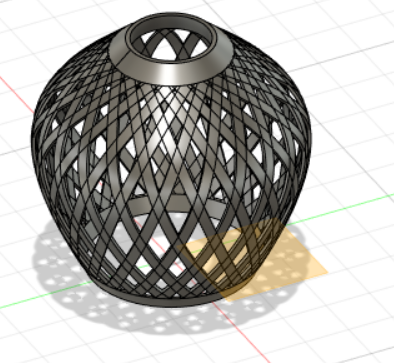

Interactive Audio & Architecture
Kinetic Ellipse
A Java / Processing 3D simulation of 130 trigonometrically calculated columns, serialized to an Arduino prototype of NeoPixels and motors.
Role: Software + hardware bridge
Serial Communication Diagram
Processing 3D sim
130 trig columns
130 trig columns
→
Serial bridge
byte stream
byte stream
→
Arduino
→
NeoPixels + motors
The physical ellipse is a low-resolution proof of a high-resolution computation. Columns that exist as sine and cosine in software become light and torque in space.